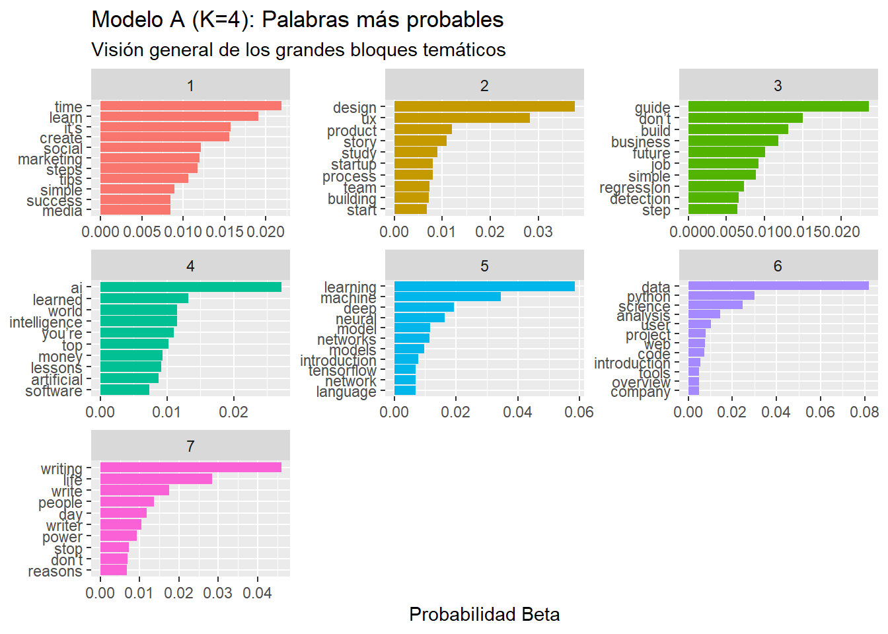
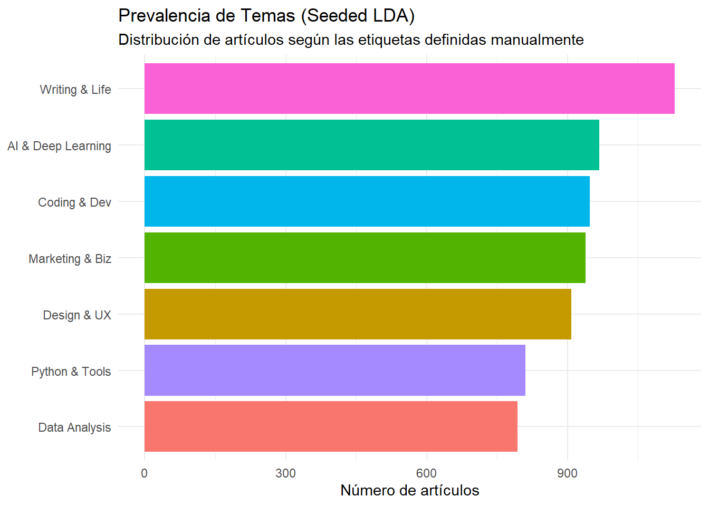
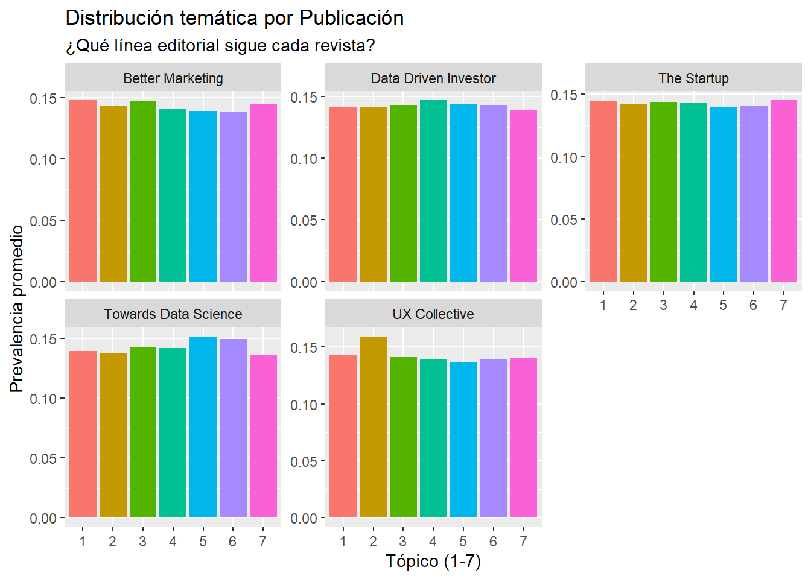

Para esta práctica de topic model, he decidido trabajar con artículos reales de la plataforma medium, una plataforma creada para que la gente pueda compartir sus ideas a traves de blogs, esta me parece un buen corpus ya que ofrece una gran variedad de artículos sobre diferentes temas.
He elegido este corpus porque Medium funciona como un termómetro bastante acertado de las tendencias actuales en tecnología, diseño y emprendimiento, ya que muchos profesionales comparten ahí sus ideas y experiencias. No son noticias básicas de agencia, sino posts escritos por profesionales que mezclan opinión, tutoriales técnicos y consejos de vida . Me parecía muy interesante ver si un algoritmo como LDA es capaz de aclarar esa mezcla de temas.
Siguiendo las instrucciones de la tarea de utilizar fuentes primarias, he utilizado un dataset de kaggle que recopila una extracción bruta, webscraping de miles de artículos publicados en las revistas más famosas de la plataforma. Es decir, son textos generados originalmente para consumo digital, con un lenguaje natural, directo y, a veces, lleno de jerga técnica.
El conjunto de datos original consta de aproximadamente 6.500 documentos. Para construir la matriz documento-término, he tomado la decisión de combinar el título y el subtítulo de cada artículo. Esto lo he hecho Porque en Medium el contenido es muy denso, y lo importante del tema siempre está concentrado en esas dos frases. Analizar el texto completo habría añadido demasiado ruido, mientras que los titulares condensan perfectamente el vocabulario semántico que quiero modelar, usando palabras como IA, python, marketing etc.
Además, el dataset incluye metadatos muy interesantes como la publicación de origen y el número de aplausos, lo que me permitirá, en la parte final del trabajo, cruzar los tópicos obtenidos con estas variables para ver, por ejemplo, si los artículos técnicos reciben más o menos importancia que los de desarrollo personal.
El objetivo principal será ajustar varios modelos LDA para ver cómo el algoritmo agrupa estos textos.
Preprocesado y Construcción de la Matriz (DTM
Como en ya hemos visto en clase el siguiente paso es realizar la limpieza de los datos, ya que estamos trabajando con texto real sacado de internet. Esto implica que el texto puede ser muy ruidos y contener muchos carácteres raros o “basura”, y cuando peor sea los datos que le metemos al modelo, peor serán los datos que saca este modelo.
Para transformar el archivo bruto en algo digerible para el algoritmo LDA, he seguido una estrategia de limpieza en cuatro fases:
La primera decisión de diseño fue determinar qué considerar documento. Al revisar el dataset, vi que muchos subtítulos contenían la explicación real del título. Por eso, en lugar de usar solo el titular, decidí crear una nueva variable combinando título y subtítulo. Esto enriquece el vocabulario disponible por documento sin añadir el ruido excesivo que tendría el cuerpo entero del artículo.
Al inspeccionar las primeras filas, detecté un problema específico de este dataset: restos de código HTML pegados al texto, como la etiqueta “classmarkupstrong” o “em”. Si no las eliminaba, el modelo habría interpretado que “classmarkup” es una palabra clave importantísima porque aparece en todos lados. He aplicado una expresión regular para eliminar estos residuos antes de la limpieza estándar.
Normalización y Stopwords, Una vez limpio el “ruido digital”, he aplicado el preprocesado clásico con la librería tidytext:
Normalización: He transformado todo a minúsculas para que “Data” y “data” cuenten como lo mismo.
Eliminación de números y puntuación: No me interesa saber cuántos artículos tienen un “10” o un signo de exclamación.
Stopwords: He eliminado las palabras vacías del inglés (artículos, preposiciones, pronombres) que tienen mucha frecuencia pero carga semántica nula.
El último paso ha sido la creación de la Matriz Documento-Término (DTM) con los “tokens” ya limpios, he construido la Matriz Documento-Término. El resultado es una matriz dispersa donde cada fila es un artículo de Medium y cada columna es una palabra de nuestro vocabulario.
Para evitar que la matriz fuera gigantesca e inmanejable, he aplicado un pequeño filtro el cual elmina aquellos términos que aparecen en poquísimos documentos, ya que suelen ser erratas o nombres propios muy raros que no ayudan a definir un tópico general. Ahora sí, con la matriz lista, el terreno estaba preparado para ajustar los modelos LDA.
library(tidyverse)
── Attaching core tidyverse packages ──────────────────────── tidyverse 2.0.0 ──
✔ dplyr 1.1.4 ✔ readr 2.1.6
✔ forcats 1.0.1 ✔ stringr 1.6.0
✔ ggplot2 4.0.1 ✔ tibble 3.3.0
✔ lubridate 1.9.4 ✔ tidyr 1.3.1
✔ purrr 1.2.0
── Conflicts ────────────────────────────────────────── tidyverse_conflicts() ──
✖ dplyr::filter() masks stats::filter()
✖ dplyr::lag() masks stats::lag()
ℹ Use the conflicted package (<http://conflicted.r-lib.org/>) to force all conflicts to become errors
library(tidytext)library(tm)
Cargando paquete requerido: NLP
Adjuntando el paquete: 'NLP'
The following object is masked from 'package:ggplot2':
annotate
Package version: 4.3.1
Unicode version: 15.1
ICU version: 74.1
Parallel computing: 16 of 16 threads used.
See https://quanteda.io for tutorials and examples.
Adjuntando el paquete: 'quanteda'
The following object is masked from 'package:tm':
stopwords
The following objects are masked from 'package:NLP':
meta, meta<-
library(seededlda)
Adjuntando el paquete: 'seededlda'
The following object is masked from 'package:quanteda':
info_tbb
The following objects are masked from 'package:topicmodels':
perplexity, terms, topics
The following object is masked from 'package:stats':
terms
# Filtrado de términos raros (Pruning)word_counts <- tokens %>%count(id, word) %>%group_by(word) %>%mutate(doc_freq =n()) %>%ungroup() %>%filter(doc_freq >=5) # Creación de la Matriz (DTM)dtm <- word_counts %>%cast_dtm(id, word, n)tokens %>%count(word, sort =TRUE) %>%head(10)
word n
1 data 525
2 learning 379
3 writing 301
4 design 241
5 machine 226
6 ux 202
7 life 192
8 python 192
9 ai 181
10 time 164
Tras aplicar el proceso de limpieza y filtrado,estas son las 10 palabras más frecuentes del corpus global para validar la calidad de los datos. Como se observa en la tabla, se han eliminado correctamente las stopwords y el ruido HTML.
El vocabulario resultante revela la naturaleza híbrida de Medium. Observamos una clara predominancia de términos técnicos asociados a la Ciencia de Datos como data, machine o python, seguidos por el ámbito del Diseño design y ux. Sin embargo, la alta frecuencia de palabras como writing, life y time sugiere que el corpus no es puramente técnico, sino que incluye una fuerte componente de artículos sobre productividad, estilo de vida y el propio oficio de escribir, algo típico de la plataforma.
Ajuste de Modelos LDA
Una vez depurado el vocabulario, el siguiente paso es transformar el texto no estructurado en algo procesable, para poder trabajar. Para ello, construimos la Matriz Documento-Término (DTM), una estructura donde cada fila representa un artículo y cada columna un término del vocabulario limpio.
Para descubrir la estructura semántica latente del corpus, utilizaremos el algoritmo Latent Dirichlet Allocation (LDA). Dado que desconocemos a priori el número exacto de temas que componen la colección de artículos, es importante realizar una exploración estadística previa. Antes de definir nuestros modelos finales, evaluaremos distintas métricas de densidad y coherencia para estimar qué rango de valores de K ofrece el mejor ajuste a la realidad de nuestros textos, para ello utilizaré métricas como perplexity o coherence/exclusivity.
result <-FindTopicsNumber( dtm,topics =seq(from =2, to =20, by =1), metrics =c("CaoJuan2009", "Deveaud2014"),method ="Gibbs",control =list(seed =1234),mc.cores =2L, # Usa núcleos de tu CPU para ir más rápido (pon 2 o 4)verbose =TRUE)
fit models... done.
calculate metrics:
CaoJuan2009... done.
Deveaud2014... done.
FindTopicsNumber_plot(result)
VIendo el gráfico podemos determinar cuáles son los valores óptimos de k, tenemos que mirar los valores donde Caojuan2009 se minimza y Deveaud2014 se maximiza, este valor de k es el que mayor coherencia y menor redundancia nos proporcionará. En este caso es K = 4, este sería el mejor valor de k para nuestro corpus, pero también vamos a probar k = 6.
Modelo A (visión general, K=4): En este primer modelo usamos una configuración bastante conservadora, con el objetivo de identificar las grandes tendencias generales del corpus. La idea es que el algoritmo agrupe los textos en categorías amplias que funcionen como contenedores temáticos, como por ejemplo Tecnología, Diseño, Negocios o Estilo de vida.
Modelo B (visión intermedia, K=6): Al aumentar el número de tópicos, buscamos descomponer esas categorías generales y empezar a ver diferencias más claras entre áreas profesionales. En este nivel esperamos que ámbitos amplios como la Tecnología se dividan en disciplinas más concretas, por ejemplo desarrollo de software frente a análisis de datos.
# Convertimos la tabla de tokens limpios a una Matriz DTMdtm <- tokens %>%count(id, word) %>%cast_dtm(id, word, n)
Para la inferencia de los tópicos hemos seleccionado el método de muestreo de Gibbs (Gibbs Sampling) en lugar de la aproximación variacional. Tal y como hemos visto en clase, el muestreo de Gibbs opera simulando iterativamente la asignación de palabras a temas hasta que la distribución se estabiliza. Aunque este proceso es computacionalmente más intensivo, lo hemos priorizado porque, en corpus de tamaño medio y textos naturales como los de Medium, tiende a producir tópicos más estables, interpretables y coherentes, evitando los óptimos locales en los que a veces queda atrapado el método variacional.
A continuación, ejecutamos los dos modelos seleccionados K = 4 y K = 6 fijando una semilla aleatoria para garantizar la total reproducibilidad de los resultados.
Una vez ajustados los modelos, procedemos a examinar su estructura semántica. Para ello, extraemos la matriz beta, que representa la probabilidad de que cada palabra pertenezca a un tópico determinado. Visualizamos los términos con mayor peso para identificar las etiquetas temáticas de cada grupo.
topics_beta_4 <-tidy(lda_4, matrix ="beta")top_terms_4 <- topics_beta_4 %>%group_by(topic) %>%slice_max(beta, n =10) %>%ungroup() %>%arrange(topic, -beta)plot_k4 <- top_terms_4 %>%mutate(term =reorder_within(term, beta, topic)) %>%ggplot(aes(beta, term, fill =factor(topic))) +geom_col(show.legend =FALSE) +facet_wrap(~ topic, scales ="free") +scale_y_reordered() +labs(title ="Modelo A (K=4): Palabras más probables",subtitle ="Visión general de los grandes bloques temáticos",x ="Probabilidad Beta", y =NULL)plot_k4
Al observar las palabras más representativas de este primer modelo, salta a la vista que el algoritmo ha captado los grandes temas de Medium, aunque con trazos muy gruesos. Sin ninguna pista previa, el modelo LDA ha conseguido agrupar los artículos en cuatro temáticas bastante reconocibles:
El Tópico 1 parece hablar sobre emprendimiento, palabras como business, marketing, build o social apuntan claramente a artículos sobre cómo montar negocios y vender ideas.
El Tópico 3 recoge el tema más humano, con términos como life, writing, lessons o story, agrupa todos esos posts sobre desarrollo personal, lecciones de vida e historias que cuenta la gente.
El Tópico 4 es el más técnico, hablando de data, python, science y code nos dicen que aquí están los términos de programación y análisis de datos.
Sin embargo, lo más interesante ocurre en el Tópico 2. Aquí el modelo nos mustra sus limitaciones al tener solo 4 categorías disponibles, ha mezclado conceptos de Diseño (design, ux) con conceptos de Inteligencia Artificial avanzada (machine, neural, deep learning). Para el algoritmo, ambos son temas técnicos, y al no poder dividirlos, los ha fusionado en uno solo. Es por eso que necesitamos aumentar el número de tópicos (K=6) y ver si logramos que el diseño y la ingeniería se separen en tópicos distintos.
topics_beta_6 <-tidy(lda_6, matrix ="beta")top_terms_6 <- topics_beta_6 %>%group_by(topic) %>%slice_max(beta, n =10) %>%ungroup() %>%arrange(topic, -beta)plot_k6 <- top_terms_6 %>%mutate(term =reorder_within(term, beta, topic)) %>%ggplot(aes(beta, term, fill =factor(topic))) +geom_col(show.legend =FALSE) +facet_wrap(~ topic, scales ="free") +scale_y_reordered() +labs(title ="Modelo B (K=6): Palabras más probables",subtitle ="Desglose intermedio en 6 grandes bloques",x ="Probabilidad Beta", y =NULL)plot_k6
Al aumentar la granularidad a 6 tópicos, se nota claramente una mejora en cómo quedan definidos los temas. Ya que el algoritmo ahora tiene más variedad a la hora de dividir los temas, lo que le permite separar conceptos que en el Modelo A aparecían mezclados. Esto confirma que el corpus es más complejo y rico de lo que parecía en una primera visión general.
La separación más notoria ha sido la de diseño e IA, el mayor acierto de este modelo es haber separado el antiguo bloque técnico en dos áreas bien diferenciadas. Por un lado, aparece el Tópico 2, centrado exclusivamente en Diseño de Producto y UX (design, ux, product, user), y por otro el Tópico 4, enfocado en la parte más teórica de la Inteligencia Artificial (machine learning, deep, neural, model). El modelo consigue captar que diseñar experiencias de usuario no es lo mismo que trabajar con modelos de aprendizaje automático.
La especialización de los datos, en el tópico 1 se define claramente como el núcleo de Ciencia de Datos y startups (data, science, analysis, startup), diferenciándose de la programación más técnica. Es un tema más orientado al análisis y a la toma de decisiones en contextos de negocio.
Marketing y negocios, es el Tópico 3, que agrupa contenidos relacionados con marketing y estrategia (marketing, business, social, create), separándolos del contenido puramente técnico. Aquí se mezclan temas de creación de contenido, redes sociales y visión empresarial.Temas híbridos
Los Tópicos 5 y 6 son especialmente interesantes por su carácter más específico. El Tópico 6 está muy ligado a Python, pero también incluye términos como life o lessons, lo que sugiere que muchos artículos de programación en Medium adoptan un enfoque más personal, tipo “lecciones aprendidas”. Por su parte, el Tópico 5 parece centrarse en tutoriales técnicos y escritura sobre código (writing, code, introduction), funcionando como un punto intermedio entre lo narrativo y lo técnico.
En conclusión el aumento de k a 6 ha sido todo un acierto ya que, de esta manera conseguimos que divida mejor los temas, y no nos quedemos demasiado cortos y tenga que mezclar temas. Además vemos una mejora en los mátices dentro de los datos, como la diferencia entre análisis y programacion de python.
Análisis matriz gamma
Hasta ahora hemos intentado interpretar los temas analizando palabras aisladas (Matriz Beta). Sin embargo, las palabras pueden ser ambiguas fuera de contexto, por ejemplo, “model” puede referirse a una pasarela de moda o a algo más técnico. Para confirmar nuestras etiquetas temáticas y validar la coherencia del modelo, es imprescindible leer los documentos reales.
En esta sección analizamos la matriz Gamma, que indica la probabilidad de pertenencia de cada artículo a un tópico. Al extraer y leer los títulos de los 3 artículos más representativos (aquellos con mayor gamma) de cada grupo del Modelo B K = 4 y K = 6, podemos confirmar definitivamente la semántica de cada tópico.
Artículos más representativos del Modelo General (K=4)
Tópico
Probabilidad (Gamma)
Título del Artículo
1
0.355
pr pro shares four mistakes to avoid when pitching the media — yfs …
1
0.353
google’s revenues are declining should investors worry — market mad…
1
0.347
elixir release with distillery a real example of creating release b…
2
0.369
comparison of activation functions for deep neural networks activat…
2
0.364
an introduction to convolutional neural networks a convolutional ne…
2
0.358
notes on artificial intelligence ai machine learning ml and deep le…
2
0.358
extending pytorch with custom activation functions a tutorial for p…
3
0.358
a step method for making quicker and better decisions jump into wha…
3
0.353
how writing words a day changed my life i knew that writing every d…
3
0.342
tips for startup founders who just started their first product mana…
4
0.358
automatically analyzing laboratory test data how to write python pr…
4
0.347
from pandas to pyspark with koalas the koalas project makes data sc…
4
0.347
ecom data series what is data science for ecommerce data science is…
La tabla anterior nos permite ponerle “nombre y apellidos” a las categorías que ya habíamos identificado antes. Al revisar los títulos con mayor probabilidad de pertenecer a cada tópico podemos comprobar que el Modelo A es bastante coherente a nivel semántico.
Tópico 1 (Negocios y actualidad): Los artículos más representativos encajan bien con la etiqueta de “Negocios”. Aparecen textos relacionados con relaciones públicas (“pr pro shares four mistakes…”) y con finanzas corporativas (“google’s revenues are declining”). Llama la atención que también se incluyan noticias sobre lanzamientos de software (“elixir release…”), lo que sugiere que, en este modelo más general, el algoritmo agrupa tanto los negocios como la actualidad del sector tecnológico en un mismo bloque.
deep learning for iceberg detection in satellite images how can dee…
4
0.260
how to overcome bias in a racist sexist world we all suffer from un…
5
0.289
what is nlp natural language processing natural language processing…
5
0.282
initializing neural networks learn how to initialize neural network…
5
0.277
rules for user signup journeys the signinsign up step is a big hurd…
6
0.264
linear regression the basics regression techniques help you measure…
6
0.260
linear regression models a guide for better understanding linear re…
6
0.251
exploring airbnb prices in london which factors influence price exp…
Al analizar los artículos con mayor probabilidad de pertenencia gamma en el Modelo B, se confirma que aumentar la granularidad ha sido una decisión acertada. A diferencia del modelo más general K = 4, en este caso se observa una separación mucho más clara entre disciplinas, lo que hace que los tópicos sean más fáciles de interpretar.
En el modelo anterior, el diseño aparecía mezclado con la ingeniería. Sin embargo, aquí el Tópico 2 está claramente centrado en Diseño y UX. Títulos como “the stages of the design craft” o “design system governance” muestran que el algoritmo ha conseguido aislar el contenido propio de la comunidad de diseñadores, diferenciándolo claramente del de los programadores.
Lo que antes aparecía como un gran bloque genérico de “Tecnología” ahora se divide en varios niveles de profundidad, lo que aporta mucha más información:
Tópico 6 (Fundamentos): Reúne conceptos estadísticos básicos y tutoriales introductorios, como “linear regression: the basics”. Es un espacio muy orientado al aprendizaje inicial, típico de estudiantes o personas que están empezando.
Tópico 1 (Análisis práctico): Se enfoca en el uso aplicado de los datos, especialmente en visualización y comparación de conjuntos de datos, con títulos como “effective data visualization” o “compare data sets”.
Tópico 4 (IA avanzada): Representa el nivel más especializado. Aquí aparecen temas de deep learning y aplicaciones avanzadas de la inteligencia artificial, incluso en ámbitos como la medicina, por ejemplo “early lung cancer detection with AI” o “reinforcement learning”.
Viendo el contenido del tópic 3, podemos observar que en un mismo tópic, tenemos dos temas diferentes como pueden ser las anécdotas personales y otras historias e ideas más relacionadas con negocios como puede ser de marketing, esto me hace pensar que podría probar a añadir un valor de k más alto para dividir estos dos temas, en este caso vamos a trabajar en un valor de K = 7.
topics_beta_7 <-tidy(lda_7, matrix ="beta")top_terms_7 <- topics_beta_7 %>%group_by(topic) %>%slice_max(beta, n =10) %>%ungroup() %>%arrange(topic, -beta)plot_k7 <- top_terms_7 %>%mutate(term =reorder_within(term, beta, topic)) %>%ggplot(aes(beta, term, fill =factor(topic))) +geom_col(show.legend =FALSE) +facet_wrap(~ topic, scales ="free") +scale_y_reordered() +labs(title ="Modelo A (K=4): Palabras más probables",subtitle ="Visión general de los grandes bloques temáticos",x ="Probabilidad Beta", y =NULL)plot_k7

Al analizar la distribución de las palabras clave en este nuevo modelo, se observa claramente la aparición de un séptimo tópico que antes quedaba oculto o mezclado con otros. Este tópico, definido por términos como writing, life, people o day, recoge de forma bastante clara contenidos relacionados con el desarrollo personal y la escritura.
El resto de los bloques temáticos, tanto técnicos como de negocio, se mantienen bastante estables con respecto al modelo anterior, aunque con ligeros cambios de orden. Este resultado es interesante desde el punto de vista metodológico, ya que sugiere que, aunque las métricas cuantitativas (como coherence o exclusivity) apuntaban a que lo ideal era quedarse en 4 o 6 tópicos, un análisis cualitativo más detallado muestra que K = 7 es, en realidad, la mejor opción.
Al introducir este tópico adicional, conseguimos separar claramente los artículos de estilo de vida y desarrollo personal de los de negocios, evitando la “mezcla” semántica que se producía cuando ambos tipos de contenido se forzaban a convivir dentro del mismo grupo.
can machine learning model simple math functions modelling some fun…
6
0.240
rules for user signup journeys the signinsign up step is a big hurd…
6
0.236
web scraping a less brief overview of scrapy and selenium part ii s…
6
0.236
got data science jobs the challenges of landing that first offer po…
6
0.236
pyspark – demand forecasting data science project a full guide for …
6
0.236
web scraping with python using selenium basic steps on scraping web…
6
0.236
secure code review and penetration testing of nodejs and javascript…
7
0.244
write to start the day write to accomplish and write to avoid procr…
7
0.235
how not to write when to ignore writing advice is the best writing …
7
0.235
writer’s write and they don’t yes to be a ‘writer’ you need to writ…
La lectura de los artículos más representativos de este modelo confirma claramente nuestra hipótesis: era necesario separar mejor los tipos de contenido. La tabla muestra una especialización temática mucho más clara y coherente.
Confirmación del Tópico 7 (escritura y vida), Los artículos con mayor probabilidad en este grupo no dejan lugar a dudas, con títulos como “write to start the day”, “how not to write” o “writer’s write”. Por fin se han aislado los textos de escritura y reflexión personal, que antes quedaban mezclados con otros temas más generales.
El contenido del tópic 2 relacionado con diseño (“stages of the design craft”, “design tokens”) se mantiene claramente separado de la programación, lo que refuerza la solidez del modelo.
Diferenciación técnica (Tópico 5 vs. Tópico 6), ell modelo también distingue bien entre el deep learning más teórico (Tópico 5, con redes neuronales y reinforcement learning) y un enfoque más aplicado de data science y web (Tópico 6, con web scraping o salidas profesionales).
En conjunto, el modelo de 7 tópicos es el que mejor representa la realidad del corpus. Captura mejor las diferencias técnicas y, sobre todo, da un espacio propio a la comunidad de escritores de Medium, separándola del contenido empresarial.
Mejora del modelo: Enfoque semi-supervisado
Tras haber determinado mediante la inspección cualitativa que la estructura latente más coherente del corpus se compone de 7 temas, damos un paso más allá para refinar la clasificación. Aunque el modelo estándar, no-supervisado, ha funcionado bien, todavía podemos observar algo de ruido en artículos que podrían pertenecer a varias categorías a la vez.
Para solucionar esto y obtener categorías más puras, implementaremos una estrategia semi-supervisada utilizando el algoritmo Seeded LDA. A diferencia del LDA tradicional, que adivina patrones desde cero, esta técnica nos permite inyectar una pequeña pista al modelo para mejorar sus resultados.
El procedimiento consiste en definir un diccionario de palabras clave para cada uno de los 7 temas que ya hemos validado anteriormente. De esta forma, restringimos la libertad del algoritmo y lo forzamos a agrupar los textos alrededor de definiciones más estrictas, pasando de un enfoque puramente exploratorio a uno más preciso.
Mediante el análisis de la tabla podemos validar la robustez del modelo K = 7 al lograr una segmentación técnica más precisa. Se distingue claramente la teoría en AI & Deep Learning (neural, model) de la ejecución práctica en Python & Tools (guide, build), separando ambos bloques de la explotación de información en Data Analysis, enfocada en la visualización y analítica de datos.
En el ámbito de negocio, el modelo desglosa la estrategia comercial en Marketing & Biz (startup, brand) frente a la experiencia de producto en Design & UX (user, interface). Finalmente, integra la dimensión humana: Writing & Life recoge las habilidades blandas y lecciones de carrera (lessons, story), mientras que Coding & Dev agrupa el desarrollo web general y el lenguaje más coloquial del corpus.
doc_assignments <-data.frame(topic = seededlda::topics(seeded_model))doc_assignments %>%count(topic) %>%ggplot(aes(x =reorder(topic, n), y = n, fill = topic)) +geom_col(show.legend =FALSE) +coord_flip() +labs(title ="Prevalencia de Temas (Seeded LDA)",subtitle ="Distribución de artículos según las etiquetas definidas manualmente",x =NULL,y ="Número de artículos" ) +theme_minimal()

Al examinar la distribución de artículos por tópico en el gráfico anterior, podemos identificar una clara jerarquía en los intereses de la comunidad analizada. Lo primero que salta a la vista en el gráfico es que el contenido no es puramente técnico; de hecho, la categoría Writing & Life es la más popular, superando la barrera de los 1.000 artículos. Esto sugiere que historias personales, lecciones de carrera y productividad son de los temas que más les gusta hablar.
En el espectro tecnológico, observo que la Inteligencia Artificial (AI & Deep Learning) se posiciona como el motor dominante. Es fascinante notar cómo este tema supera ampliamente a áreas más tradicionales como el desarrollo web o el diseño, lo que confirma que las tendencias de mercado actuales están dictando las tematicas predominantes del corpus.
Por último, he detectado un patrón interesante respecto a la especialización. Mientras que los temas amplios y de gestión (Marketing, Diseño, Coding) mantienen un volumen alto y constante, los nichos instrumentales más específicos, como Python & Tools y Data Analysis, aparecen con menor frecuencia al final de la lista. Esto indica que es más común encontrar discusiones generales sobre el futuro de la tecnología que tutoriales técnicos paso a paso.
Distribución temática por Fuente Editorial
Una vez definida la estructura semántica del corpus con nuestro modelo óptimo K = 7, es fundamental analizar cómo se distribuyen estos temas a través de las distintas fuentes de información.
Para ello, recurrimos a la extracción de la matriz Gamma, la cual nos proporciona la probabilidad posterior de que un documento pertenezca a un tópico específico. Al cruzar esta distribución probabilística con los metadatos de los artículos, podemos perfilar cuantitativamente la identidad editorial de cada revista.
El siguiente código procesa estas probabilidades para visualizar las tematicas de las publicaciones principales (como Towards Data Science o UX Collective), revelando qué tópicos prioriza cada medio en su estrategia de contenidos.
gamma_df <-tidy(lda_7, matrix ="gamma")gamma_con_meta <- gamma_df %>%mutate(document =as.character(document)) %>%left_join(clean_corpus %>%mutate(id =as.character(id)), by =c("document"="id"))gamma_con_meta %>%group_by(publication, topic) %>%summarise(mean_gamma =mean(gamma)) %>%ungroup() %>%filter(publication %in%c("Towards Data Science", "The Startup", "UX Collective","Better Marketing" ,"Writing Cooperative", "Better Human","Data Driven Investor" )) %>%ggplot(aes(x =factor(topic), y = mean_gamma, fill =factor(topic))) +geom_col(show.legend =FALSE) +facet_wrap(~ publication, scales ="free_y") +labs(title ="Distribución temática por Publicación",subtitle ="¿Qué línea editorial sigue cada revista?",x ="Tópico (1-7)",y ="Prevalencia promedio" )
`summarise()` has grouped output by 'publication'. You can override using the
`.groups` argument.

unique(clean_corpus$publication)
[1] "Towards Data Science" "UX Collective"
[3] "The Startup" "The Writing Cooperative"
[5] "Data Driven Investor" "Better Marketing"
[7] "Better Humans"
Al analizar la distribución temática por publicación, lo primero que podemos observar es una sorprendente homogeneidad en el ecosistema: no existen silos aislados, sino una red conectada donde las probabilidades se mantienen estables entre el 14% y 15%. Lejos de encontrar revistas que publiquen exclusivamente sobre un único tema, observo que todas las revistas publican blogs de todos los temas sin especializarse en uno en concreto, permitiendo que un mismo artículo pueda encajar en múltiples espacios si el enfoque es el adecuado.
Sin embargo, al profundizar en los matices, emergen identidades muy marcadas. UX Collective se destaca como el caso más nítido de especialización, mostrando una fidelidad evidente al Tópico 2 (Design & UX) y priorizando el diseño sobre cualquier otra disciplina. De forma similar, Towards Data Science valida su perfil técnico con un dominio de los temas de IA y programación, dejando en segundo plano la estrategia comercial pura para centrarse en la ingeniería y la ciencia de datos.
Por último, he detectado un patrón de “generalismo” en gigantes como The Startup y Data Driven Investor. Estas publicaciones presentan distribuciones prácticamente planas, lo que confirma su rol como grandes contenedores editoriales donde convergen tecnología, negocios y crecimiento personal. Esto demuestra que, aunque existen nichos técnicos, la mayor parte del corpus fluye a través de plataformas transversales que buscan un equilibrio entre la habilidad técnica (“hard skills”) y la reflexión profesional (“soft skills”).
Lo que me llama la atención de este gráfico es la distribución. La expectativa lógica sería encontrar “silos” estancos, donde una publicación técnica se limite exclusivamente al código y una de negocios al mercado. Sin embargo, mi análisis sugiere que la realidad de este corpus es mucho más compleja: los artículos no son textos académicos unidimensionales, sino narrativas híbridas. Un tutorial sobre Python rara vez es solo código; a menudo incluye contextos de negocio (Marketing) o consejos profesionales (Life), lo que obliga al modelo a asignar porcentajes a múltiples temas simultáneamente, diluyendo la especialización pura.
Además, debemos considerar el funcionamiento matemático del propio modelo LDA. El algoritmo trabaja con probabilidades, no con absolutos, y rara vez asigna un 0% estricto a un tema. En su lugar, detecta o ruido de fondo semántico en casi todos los documentos. Esta sensibilidad matemática, combinada con la riqueza del lenguaje natural, genera esa base uniforme del 10-15% que observamos en todas las barras, confirmando que, en la divulgación digital actual, ningún tema existe en completo aislamiento.
Análisis impacto
Hasta este punto, nuestro estudio se ha centrado en analizar la oferta de contenidos: hemos desglosado qué temas proponen los autores y cómo se distribuyen editorialmente. Sin embargo, para obtener una visión completa del ecosistema de Medium, es imprescindible analizar que es lo que quiere el público o lo que más gusta, es decir, cómo reacciona la audiencia ante estos temas.
Para ello, incorporamos al análisis la variable “claps”, una métrica de interacción que funciona como proxy de la viralidad y la valoración del lector. El objetivo de esta sección es cruzar nuestra estructura semántica latente K = 7 con los datos de engagement para determinar si existe una correlación entre la temática y el éxito del artículo. ¿Valora la comunidad por igual un tutorial técnico complejo que una reflexión sobre productividad, o existen desigualdades estructurales en la “economía de la atención” de la plataforma?
impacto_temas <- gamma_df %>%mutate(document =as.character(document)) %>%left_join(clean_corpus %>%mutate(id =as.character(id)), by =c("document"="id")) %>%group_by(document) %>%slice_max(gamma, n =1) %>%ungroup()impacto_temas %>%ggplot(aes(x =reorder(factor(topic), claps, FUN = median), y = claps, fill =factor(topic))) +geom_boxplot(outlier.alpha =0.3, show.legend =FALSE) +# Muestra la caja y los outliers transparentesscale_y_log10() +coord_flip() +labs(title ="Distribución de Engagement por Tópico",subtitle ="Escala logarítmica: Mediana (línea negra) y potencial viral (puntos)",x ="Tópico",y ="Número de Aplausos (Log scale)" ) +theme_minimal()
Warning in scale_y_log10(): log-10 transformation introduced infinite values.
Warning: Removed 185 rows containing non-finite outside the scale range
(`stat_boxplot()`).
Al analizar el gráfico de distribución, lo que más me sorprende es la igualdad de oportunidades. Las medianas están muy alineadas en torno a los 100-150 aplausos, lo que indica que el rendimiento base es muy similar para todos, ya escribas sobre código complejo o sobre estrategia de negocios.
Sin embargo, hay un ganador claro en estabilidad: el Tópic 7 (Writing & Life) muestra la mediana más alta, confirmándose como la apuesta más segura para garantizar un mínimo de audiencia. Por el contrario, los temas puramente técnicos como el Tópic 6 tienen un suelo un poco más bajo, reflejando la dificultad de conectar con el gran público, esto también se debe a que los temas más técnicos tienen un público menor y mas especifico mientras que temas de la vida tiene un público mucho más amplio.
Pero lo más alentador son los puntos dispersos a la derecha (los outliers). El gráfico demuestra que no existe un techo para lo técnico: todos los temas, sin excepción, tienen artículos virales que superan los 10.000 aplausos.
Conclusión
Tras finalizar el estudio, podemos confirmar que hemos conseguido transformar un corpus con 6500 titulars y subtitulares de blogs en un mapa estructurado de las tematicas que se abarcan en estos. El modelo LDA, ajustado finalmente a K = 7, ha demostrado ser la herramienta ideal para descubrir la estructura oculta de Medium, revelando que la plataforma se sostiene sobre dos grandes pilares. Uno técnico liderado por la IA y el Diseño y uno humano centrado en la escritura y las lecciones de vida.
Sin embargo, el hallazgo que más me ha sorprendido ha sido el comportamiento de las editoriales. Al visualizar la distribución de temas por revista, esperaba encontrar silos cerrados, donde las publicaciones técnicas solo hablaran de código y las de negocios solo de mercado.
Lo que he encontrado es muy distinto, todas las editoriales mantienen una probabilidad base muy similar de tratar cualquier tema. Esto me deja con la duda de si realmente mi modelo de LDA ha conseguido captar a la prefección los temas de los que se habla en la plataforma y de si sabe distribuirlos entre las diferentes editoriales correctamente.
Por último, el análisis de impacto ha cerrado el círculo demostrando una clara jerarquía de viralidad. He podido confirmar que escribir sobre “Writing & Life” es la apuesta más segura, ya que ofrece una audiencia base más estable y alta.